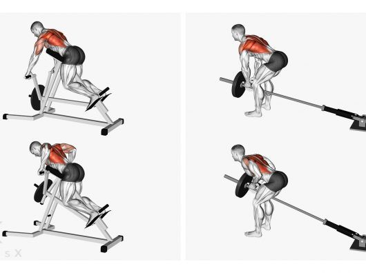
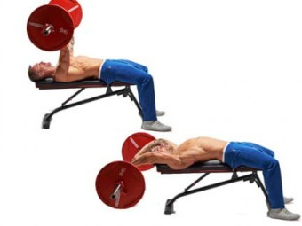
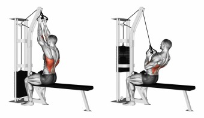
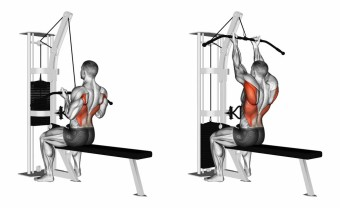

Les tirages verticaux à la poulie haute

Le tirage vertical à la poulie haute est un exercice qui recrute le grand dorsal et qui développe le dos dans sa largeur.
Le rowing barre buste penché

Le rowing barre est un exercice de base qui recrute la totalité du dos.
Veillez à bien vérouiller le bassin et à ne pas enrouler le bas du dos pendant l'exécution du mouvement.
Le bûcheron

Pour le bûcheron prenez appui sur un banc plat ou sur le rack comme sur cette illustration.
Ramenez l'haltère vers le bassin et étirez bien le grand dorsal en position de départ.
Renegate row

Le renegate row fait travailler les muscles stabilisateurs en plus des grands dorsaux, pour un dévelloppement complet du dos.
T-Bar

Le rowing à la T-Bar est un exercice de base qui fait intervenir les dorsaux et les trapèzes.
Veillez à bien prendre appui au sol et à garder le dos bien droit.
Les tractions

Les tractions sont un exercice de base qui met l'accent sur l'évasement du dos.
Le pull-over (avec barre EZ et en prise inversée)

Le pull over à la barre EZ, prise inversée, est un exercice oublié qui stimule l'évasement du dos.
Le tirage vertical prise serrée

Pour accentuer la tension sur le petit et le grand rond, vous pouvez vous placer dos à la poulie afin d'immobiliser les lombaires.
Le tirage vertical prise inversée

Choisissez une poignée de tirage coudée pour ne pas mettre de pression sur vos poignets.
Si vous ne disposez pas de poignée coudée (EZ), essayez de crocheter la barre.
Ne fermez pas la main.